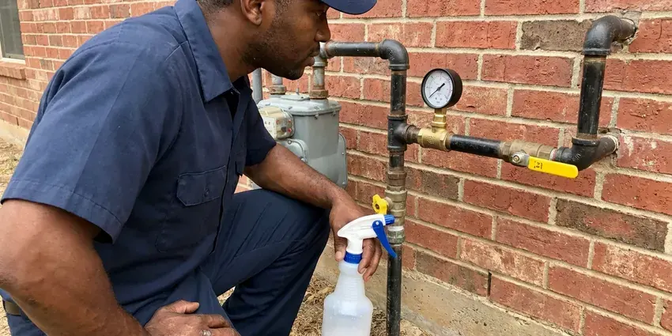
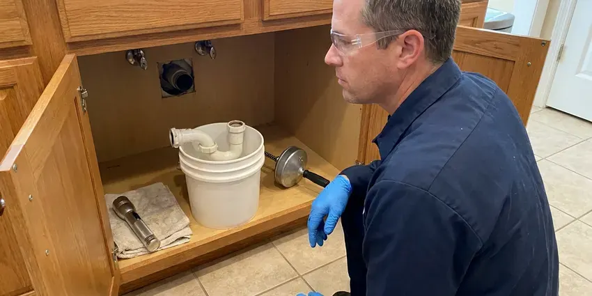

Commercial Plumbing in Reno, NV
Your tenants and customers should not notice we were there. We work early, late or on weekends across Reno, NV.
- Weekend Scheduling
- Local Nevada Crews
- Maintenance Plans Available
- Certified Backflow Testers
Keep Your Doors Open in Reno, NV
Tell us the address and the problem, and we will send a plumber with commercial parts on board.
Experienced Commercial Plumbers Serving Reno, NV
FMR Plumbing keeps a written record of every commercial visit, with photos, test results and the part numbers we installed. Facility managers like that. When an inspector or insurance adjuster asks what was done to the backflow assembly last spring, you can answer in a minute instead of digging through emails. The history also points out which fixtures fail over and over.
Work we handle every week:
- High-input water heater repair and installation
- RPZ, double check and PVB installation
- Tankless rack and boiler-fed water heater service

Additional Plumbing Maintenance Services in Reno, NV
Our maintenance and specialty plumbing services in Reno, NV catch small problems before they become emergencies.




Gas Line Repair service for Reno homeowners

Customers
Why Choose FMR Plumbing for Commercial Plumbing in Reno, NV?
Downtime is the real cost of a commercial plumbing failure. Our trucks stock flush valve rebuild kits, pressure reducing valve cartridges and heater thermostats for first-visit repairs. That covers most calls. If a part has to be ordered, we leave the fixture safe and working where we can.
- Commercial Equipment, We run jetters up to 4,000 psi and sewer cameras that reach long commercial laterals and large-diameter mains.
- Camera Diagnostics, Every recurring drain problem gets a video look before we price it, so you pay for the actual fix.
- Inspection Ready, Our work meets plumbing, backflow and health department requirements for commercial sites.
Citywide Coverage
Downtown storefronts, suburban shopping centers and warehouse districts in Reno are all part of our regular routes. One trip handles most repairs. For special-order parts we leave the fixture working where possible and return the day the part lands.
Experienced Team
Sloan and Zurn flushometers, Rheem and AO Smith commercial water heaters and large-diameter cast iron and PVC drains are everyday work for our plumbers. Several hold backflow tester certifications. One tech can often cover the restroom repair, the heater and the backflow test in one trip.
Safety-First Approach
We follow commercial plumbing codes, backflow rules and health department requirements for food service sites. Confined space rules are followed. That means air monitoring and an attendant when we work inside large interceptors, utility vaults or the crawlspaces under older buildings.
Trusted Certified Reno Plumbing Services Professionals
At FMR Plumbing, we take pride in licensed, certified plumbing services throughout Reno, NV. Those papers on the wall mean something. Our plumbers hold recognized industry credentials, and they follow strict safety and quality rules on every repair, installation and maintenance call we run.
Call Us Now PHCC Plumbing Contractor Recognition
PHCC Plumbing Contractor Recognition Better Business Bureau (BBB) Accreditation
Better Business Bureau (BBB) Accreditation Angi Certified Pro
Angi Certified Pro ISO 9001 Quality Management Certification
ISO 9001 Quality Management CertificationCommercial Plumbing Services We Handle in Reno, NV
Commercial Restroom Plumbing in Reno
A broken flushometer in a busy restroom gets noticed by every customer who walks in. We repair and replace Sloan and Zurn flush valves, sensor faucets, wall-hung toilets and carriers. ADA work is part of it too. For ADA remodels we set fixture heights, add grab bar blocking in the wall and insulate the drain and supply lines under sinks.

Commercial Drain Cleaning and Hydro-Jetting in Reno
Commercial drains carry grease, paper towels and food waste in volumes no house ever sees. A cable just pokes a hole. Our jetters push water at 3,000 to 4,000 psi through a spinning nozzle that scours the full pipe wall, which clears 4-inch and 6-inch lines back to bare pipe. Jetting keeps the line open for months instead of days. Restaurants, schools and apartment stacks are where we see the biggest difference.
Grease Interceptor and Line Service in Reno, NV
Grease does not stay in the trap if the trap is full or the baffles are broken. It ends up in your line. Our crew checks the baffles and tees, replaces what is broken and jets the feed lines to strip hardened grease a cable cannot touch. A jetted line holds up much better on a busy night.
Tenant Improvement and Build-Out Plumbing in Reno, NV
New tenants usually need restrooms moved, a break room added or a kitchen built in a shell space. Our crew installs from the plans, works around the framers and electricians and books inspections early so the opening date holds. Old lines get capped. Abandoned drains and supplies are cut back to the main and capped properly, which prevents dead legs and sewer gas later.
Commercial Leak Detection in Reno, NV
Water bills that jump 30 percent with no change in business usually mean a hidden leak or a stuck fixture. Start with the meter. We shut fixtures off zone by zone and watch the meter, then use acoustic sensors, thermal cameras and tracer gas to find leaks in walls, ceilings and buried service lines. Sometimes the culprit is just a running toilet. One stuck flush valve can waste several thousand gallons a week.
Commercial Water Heater Repair and Installation in Reno, NV
A commercial water heater is judged by recovery rate, the gallons it can reheat per hour, not by tank size alone. Undersized heaters run cold by mid-shift. We service AO Smith, Rheem, Bradford White and State commercial units, gas and electric, tank and tankless, and we check thermostats, gas valves, flue draft and T and P valves on every call. New installs get sized from your peak hour demand. That is how a busy kitchen stops running out of hot water during the dinner push.
Grease Trap Installation in Reno
A new restaurant or a kitchen expansion usually needs a grease interceptor sized from the fixtures that drain to it. Small kitchens can get by with an under-sink trap, but bigger operations often need an in-ground interceptor of 500 gallons or more. Sizing is set by code. We work from your kitchen plan, set the unit at the right depth and vent it so it passes the pretreatment inspection on the first try.

Commercial Water Heater Service in Reno, NV
Big tank heaters fail in a few common ways: a failed gas valve, a cracked flue baffle, a stuck T and P valve or a tank full of scale. Each sounds different. Our techs test flue draft, check combustion, measure the temperature at the farthest fixture and flush sediment, which together tell us whether to repair the unit or plan its replacement. Tankless units get a descaling flush. If the building has a recirc loop, we test the pump and check valve too.
Commercial Plumbing Near Me in Reno, NV
Businesses around Reno keep calling FMR Plumbing because the same plumbers come back. They remember where the cleanout is hidden, which unit has the touchy shutoff and what the heater was doing last time. That cuts every visit shorter. It also means fewer surprises when a bigger repair comes up, because someone already knows the system.
Response time matters more for a business than for a house. A restroom down is sales lost. Calls go to the nearest open commercial tech, and you get an arrival window on the phone instead of a guess. A couple of hours is typical.
FMR Plumbing at a Glance
- Fully licensed plumbing team covering Reno, NV
- 24/7 emergency service with same-day scheduling
- Clear written estimates, no hidden fees
- 4.8-star rated by 903+ Nevada customers
Reno Map
Reno Information
- Population
- 274,915
- Area codes
- 775/530/415
- Service area
- Reno and towns within a 40 mile drive
- Nearby
- Sun Valley, Sparks, Carson, Fernley
Commercial plumbing in Reno, NV carries more volume under tighter code than a home system, and it needs a plumber who has worked on both.
Talk to a Plumber
Reach out to FMR Plumbing for reliable plumbing work done by licensed pros in Reno, NV.
Our Specialized Plumbing Services in Reno, NV
At FMR Plumbing, we handle the full list of plumbing services across Reno, NV. We go from leak detection all the way to full system installations, for homes and commercial buildings, and we do it quickly at a fair price. Take a look at our core services below:


How a Commercial Plumbing Call Works in Reno, NV
Our commercial process in Reno is built around one thing: keeping your business open while we work.
Tell Us What Happened
Call FMR Plumbing at (725) 360-1766 for an emergency or a planned job. We dispatch a technician to your Reno property with the right parts.
Find the Cause
Our plumber inspects the problem with the right tools and explains the cause and the fix before quoting it.
Fix and Final Check
With your approval, we make the fix and run the system. You get a report and any maintenance notes.
Frequently Asked Questions About Commercial Plumbing in Reno
Prices in Reno depend on the work and the time of day. A cleared kitchen drain might be $150 to $400. A commercial water heater replacement can run $2,000 to $10,000 or more, and a full building repipe is usually priced in the tens of thousands depending on floors and fixture count. Every quote comes in writing after a site visit.
Our commercial work comes with a written warranty on parts and labor. Terms vary by job and appear on your proposal. New equipment also carries the manufacturer warranty, and we register it for you so the paperwork is on file if you ever need a claim.
Most water providers want commercial backflow assemblies tested once a year. We track the due date and handle the filing.
Yes. Burst pipes, sewage backups and dead water heaters get answered any hour. While the plumber drives over, we can walk your staff through shutting off the main so the damage stops growing.
Put the routine work on a calendar. Annual backflow tests, scheduled kitchen jetting and yearly water heater flushing prevent most emergencies. Train your staff as well. Sink strainers, signs about wipes in restrooms and a rule against pouring fryer oil down the drain do more than most people expect for keeping commercial lines clear.
Watch for floor drains that gurgle, sewer smells near restrooms and a water bill that jumps without a reason. Weak pressure upstairs counts too. Brown rings on ceiling tile under a restroom or kitchen usually mean a leak overhead, and finding it early protects the ceiling and whatever sits under it.
Once a year works for most offices and retail stores in Reno. Kitchens need them more often. High-use sites like kitchens, gyms and manufacturing plants often benefit from quarterly visits that cover drains, heaters and backflow devices before small problems turn into closures.
Repairs and installations come with a written parts and labor warranty. Each invoice shows the coverage period. Before leaving, your tech will explain the coverage, including any manufacturer warranty on new equipment.
Hear From Customers Who Hired Our Plumbing Experts

Megan L.
Our upstairs tub drained so slowly that every shower turned into a bath. FMR Plumbing pulled a wad of hair out of the stopper and then snaked the line past the trap. Three months later it still drains fast.
Drain Cleaning · Carson, NV
Greg S.
I manage a small strip center with six tenants. FMR Plumbing handles our annual backflow testing and fixed a recurring clog in the shared sewer line that had been backing into the nail salon. Their reports come in clean and on time.
Commercial Plumbing · Carson, NV
Angela D.
Our sump pump quit during a storm and the water was an inch from the basement carpet. FMR Plumbing put in a new pump with a battery backup that same evening. We have had two heavy rains since. It kicked on both times.
Sump Pump · Reno, NV
Robert G.
The camera showed a full break in our clay sewer line near the street. FMR Plumbing replaced it with a trenchless pipe burst, so the only digging was two small pits in the yard. They let us watch the footage before and after.
Sewer Line Replacement · Fernley, NVPatricia H.
We had a slab leak that two other companies could not find. FMR Plumbing located it in under an hour with a listening device. They rerouted the line through the attic instead of breaking up the floor, so we kept our kitchen tile.
Slab Leak Repair · Fernley, NV
Nathan E.
Our tankless heater kept throwing an error code and shutting off mid shower. The tech flushed the heat exchanger, which was full of scale, and replaced a bad flow sensor. Hot water has been steady for half a year now.
Water Heater Repair · Pahrump, NV